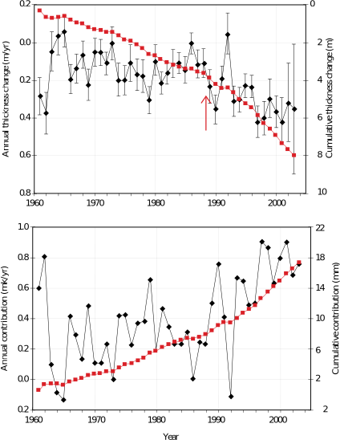
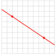

The introduction to Chapter 1 discussed the rise in sea level over the last few decades. One of the contributing factors to this rise is the melting of Earths glaciers.
Glaciers around the world are retreating at accelerating rates, and many lower-latitude mountain glaciers may soon disappear entirely. The meltwater from these smaller glaciers contributed as much as 40% to the total rise in sea level over the 1990s.
By measuring the change in ice and snow height at fixed points and multiplying by the surface area of the glacier, scientists calculate the total volume of water lost from land-based glaciers. Dividing this volume by the surface area of the worlds oceans gives the resulting change in sea level.
The graphs below show the change in thickness of the land-based glaciers overthe past 5 years, and the rise in sea level attributed to their melting. In this section we consider how to measure a rate of change.

Subsection1.4.1Rate of Change
The equation we use to describe a linear model, \(y = mx + b\text{,}\) gives the starting value \(b\) of the variable \(y\) and the rate \(m\) at which \(y\) changes. Now we will look more closely at rates and how they appear on the graph of the model. First, lets review the notion of a ratio used as a rate. You are already familiar with several types of rates.
Definition1.4.1.Rate.
A rate is a type of ratio that compares two quantities with different units.
Checkpoint1.4.2.QuickCheck 1.
A ratio that compares two quantities with different units is called a
rate
integer
price
.
Answer.
\(\text{rate}\)
Solution.
rate
In the examples below, notice that each rate has units of the form \(\dfrac{\text{something}}{\text{something else}} \text{,}\) which we read as "something per something else."
Example1.4.3.
Caryn bought 7 used paperback novels for a total of $2.45. Use a ratio to calculate the price per book. \(~\alert{\text{[TK]}}\)
Solution.
\begin{equation*}
\frac{\text{total cost in dollars}}{\text{number of books}} = \frac{2.45 \text{ dollars}}{7 \text{ books}} = 0.35 \text{ dollars/book}
\end{equation*}
The novels were priced at a rate of $0.35 per book.
Checkpoint1.4.4.Practice 1.
Delbert biked 34 miles in 5 hours. Use a ratio to calculate his average speed.
\begin{equation*}
\frac{\text{distance in miles}}{\text{time in hours}}= \hphantom{"Delbert speed"}
\end{equation*}
Delbert biked at a rate of
miles
hours
miles per hour
hours per mile
Answer1.
\(6.8\)
Answer2.
\(\text{miles per hour}\)
Solution.
6.8 miles per hour
The rate you calculated in Practice 1, Delberts average speed, actually compares the change in two variables, his distance from his starting point, and the time elapsed. This type of rate appears often in linear models.
Definition1.4.5.Rate of Change.
A rate of change is a special kind of ratio that compares the change in two quantities or variables.
In the next Example we calculate speed as a rate of change, and we introduce a new notation, \(\blert{\Delta}\text{,}\) to help with the calculation.
Example1.4.6.
Gregor is driving across Montana. At 1 pm his trip odometer reads 189 miles, and at 4 pm it reads 360 miles. Calculate Gregors average speed as a rate of change.
Solution.
We have two variables: time, \(t\text{,}\) and distance, \(d\text{,}\) and the following data points:
\(~ t ~ \)
\(d\)
\(1\)
\(189\)
\(4\)
\(360\)
Gregors speed is the ratio of the distance he traveled to the time it took. The distance he traveled is the change in his odometer reading (from 189 miles to 360 miles), and the time it took is the change in the clock reading (from 1 pm to 4 pm).The units of this ratio are miles per hour.
In mathematics, we use the symbol \(\blert{\Delta}\) (delta) for change in. Thus
Nelson is a long-distance truck driver. On a recent trip through the Midwest, he noted these odometer readings:
4 am
127 miles
10 am
421 miles
What was Nelsons average speed?
miles
hours
miles per hour
hours per mile
Answer1.
\(49\)
Answer2.
\(\text{miles per hour}\)
Solution.
49 miles per hour
How do we see the rate of change on a graph? Lets consider the example above. The graph shows Gregors distance, \(d\text{,}\) at time \(t\text{.}\) We plot the two data points, \((1, 189)\) and \((4, 360)\text{,}\) and draw a straight line joining them. We can illustrate \(\Delta d\) and \(\Delta t\) by vertical and horizontal line segments, as shown on the graph.
The rate of change of distance with respect to time, or speed, is the ratio of \(\Delta d\) to \(\Delta t\text{.}\) It measures how much \(d\) changes for each unit increase in \(t\text{,}\) or how far Gregor travels in each hour. This quantity, the ratio \(\dfrac{\Delta d}{\Delta t} \text{,}\) is the slope of the line. \(~\alert{\text{[TK]}}\)
Checkpoint1.4.9.QuickCheck 3.
What feature of a graph illustrates rate of change?
The \(y\)-axis
Slope
Scales on the axes
The coordinate of a point
Answer.
\(\text{Choice 2}\)
Solution.
Slope
Subsection1.4.2Review of Slope
You may have encountered the notion of slope in previous courses. Let us see how slope is related to rate of change.
Slope.
The slope of a line is a rate of change that measures the steepness of the line.
The slope tells us how much the \(y\)-coordinate changes for each unit of increase in the \(x\)-coordinate, as we move from one point to another along the line.
Checkpoint1.4.10.QuickCheck 4.
The slope of a line tells us how much the \(y\)-coordinate changes
From one end of the graph to the other.
As we move up the \(y\)-axis.
From one point to the next point.
For each unit of increase in the \(x\)-coordinate.
Answer.
\(\text{Choice 4}\)
Solution.
For each unit of increase in the \(x\)-coordinate.
Using the notation \(\Delta\) for "change in," we define slope as follows.
Definition1.4.11.Slope of a Line.
\begin{equation*}
\text{slope}=\frac{\text{change in }y\text{-coordinate}}{\text{change in }x\text{-coordinate}}
\end{equation*}
\begin{equation*}
\Delta x~ \text{ is}~
\begin{cases}
\text{positive if }x\text{ increases} \amp \text{(we move to the right)}\\
\text{negative if }x\text{ decreases} \amp \text{(we move to the left)}
\end{cases}
\end{equation*}
From these examples, we can make the following observations:
Slope and Steepness.
For positive slopes, the larger the value of \(m\text{,}\) the more the \(y\)-value increases for each unit increase in \(x\text{,}\) and the more we climb up as our location changes from left to right. (So graph A is steeper than graph B.)
If \(y\) decreases as we move from left to right, then \(\Delta y\) is negative when \(\Delta x\) is positive, so their ratio (the slope) is negative. (See graph C.)
Example1.4.12.
Compute the slope of the line. \(~\alert{\text{[TK]}}~~\)
Illustrate the slope on the graph by drawing a vertical segment of length \(\Delta y\) and a horizontal segment of length \(\Delta x\text{.}\)
If \(\Delta x =1\text{,}\) what is the length of the vertical segment?
Solution.
The points \((20,500)\) and \((40,1000) \) lie on the graph. As we move from the first point to the second point, \(x\) increases by 20 units, so \(\Delta x=20\text{,}\) and \(y\) increases by 500 units, so \(\Delta y = 500\text{.}\) Thus
The slope is 25, which means that \(y\) increases 25 units for each 1-unit increase in \(x\text{.}\) So, if \(\Delta x=1\text{,}\) then \(\Delta y=25\text{.}\)
Checkpoint1.4.13.Practice 3.
Compute the slope of the line.
\(m=\)
Illustrate the slope on the graph by drawing a vertical segment for \(\Delta y\) and a horizontal segment for \(\Delta x\text{.}\)
If \(\Delta x=1\text{,}\) what is the length of the vertical segment?
The length is
Answer1.
\(-37.5\)
Answer2.
\(37.5\)
Solution.
\(\displaystyle -37.5\)
A figure is below.
\(\displaystyle 37.5\)
Graph for part (b):
Subsection1.4.3Interpreting Slope as a Rate
By putting together all of our discussion so far, we can now see that the slope of a line measures the rate of change of \(y\) with respect to \(x\text{.}\)
Example1.4.14.
The graph shows the altitude, \(a\) (in feet), of a skier \(t\) minutes after getting on a ski lift.
Choose two points on the graph and compute the slope, including units.
Explain what the slope measures in this problem. \(~\alert{\text{[TK]}}\)
Write a linear model for \(a\) in terms of \(t\text{.}\)
Solution.
We choose the points \((2,400)\) and \((4, 700)\text{,}\) as shown on the graph. Then
The slope gives the rate of change of altitude with respect to time. The skier rises at a rate of 150 feet per minute.
A linear model has the form
\begin{equation*}
y = (\text{starting value}) + (\text{rate}) \times t
\end{equation*}
From the graph, we see that at \(t = 0\) the skiers altitude was \(a = 100\text{,}\) and we calculated the rate of change of altitude as 150 feet per minute. Substituting these values into the formula, we find
\begin{equation*}
a = 100 + 150t
\end{equation*}
Slope as a Rate of Change.
The slope of a line measures the rate of change of \(y\) with respect to \(x\text{.}\)
The units of \(\Delta y\) and \(\Delta x\) can help us interpret the slope as a rate.
Checkpoint1.4.15.Practice 4.
The graph shows the amount of garbage \(G\) (in tons) that has been deposited at a dumpsite \(t\) years after new regulations go into effect.
Choose two points on the graph and compute the slope, including units.
The slope is
tons
years
tons per year
years per ton
Explain what the slope measures in this problem.
A) The rate at which garbage accumulates
B) The steepness of the garbage pile
C) The volume of the garbage
D) The cost to use the dump site
Choose two different points and compute the slope again. Do you get the same value as before?
The slope is
tons
years
tons per year
years per ton
Answer1.
\(12.5\)
Answer2.
\(\text{tons per year}\)
Answer3.
\(\text{A) ... garbage accumulates}\)
Answer4.
\(12.5\)
Answer5.
\(\text{tons per year}\)
Solution.
12.5 tons per year
The slope gives the rate at which garbage is accumulating.
The slope is the same using any two points on the line.
Subsection1.4.4Lines Have Constant Slope
You have probably already noticed the following important fact about lines.
Lines Have Constant Slope.
The slope of a line is constant: no matter which two points you pick to compute the slope, you will always get the same value.
For the line shown in the figure, try computing the slope using the points \(P\) and \(Q\text{,}\) and then using the points \(G\) and \(H\text{.}\) In each case, you should find that the slope is \(\frac{3}{2} \text{.}\)
Here is another way to look at slopes. If we start at any point on the line shown and move 9 units to the right, what value of \(\Delta y\) will bring us back to the line? We can use the slope formula with \(\Delta x=9\text{.}\)
\begin{align*}
m \amp=\frac{\Delta y}{\Delta x} \amp\amp\blert{\text{Substitute the known values.}} \\
\frac{2}{3} \amp= \frac{\Delta y}{9} \amp\amp \blert{\text{Solve for }\Delta y.} \\
\Delta y \amp = 9 \left(\frac{2}{3} \right)=6
\end{align*}
You can use the graph to check this result for yourself; try starting at the point \((-6,-3) \text{.}\)
The fact that lines have constant slope has two important consequences. First because \(m\) is constant for a given line, we can use the formula \(m=\dfrac{\Delta y}{\Delta x} \)to find \(\Delta y\) when we know \(\Delta x \text{,}\) or to find \(\Delta x \) when we know \(\Delta y \text{.}\)
Checkpoint1.4.16.QuickCheck 5.
What formula can we use to find \(\Delta y\) when we know \(\Delta x\text{,}\) or \(\Delta x\) when we know \(\Delta y\text{?}\)
The equation of a line
The general linear formula
The slope formula
\(\displaystyle D=RT\)
Answer.
\(\text{Choice 3}\)
Solution.
The slope formula
Example1.4.17.
A wheelchair ramp can have a slope of no more than 24%, or 0.24. What horizontal distance is needed if the ramp must climb an elevation of 4 feet?
Solution.
We first draw a sketch of the wheelchair ramp and label \(\Delta x\) and \(\Delta y\text{.}\) We are given that \(\Delta y=4\) feet, and we are looking for \(\Delta x\text{.}\) We substitute the known values into the slope formula, and solve for \(\Delta x\text{.}\)
\begin{align*}
0.24 \amp = \frac{4}{\Delta x} \amp\amp \blert{\text{Multiply both sides by }\Delta x.}\\
0.24 \Delta x \amp = 4 \amp\amp \blert{\text{Divide both sides by }0.24.}\\
\Delta x\amp = \frac{4}{0.24}=16.\overline{6}
\end{align*}
The wheelchair ramp must have a horizontal length of \(16\frac{2}{3} \) feet, or 16 feet 8 inches.
Checkpoint1.4.18.Practice 5.
A wheelchair ramp can have a slope of no more than 24%, or 0.24. What height can the wheelchair ramp climb over a horizontal distance of 10 feet?
Answer:
Hint.
Do we know the value of \(\Delta y\) or of \(\Delta x\text{?}\)
Answer.
\(2.4\ {\rm ft}\)
Solution.
2.4 ft
Here is a second consequence of the fact that lines have constant slope: We can tell whether a collection of data points lies on a straight line by computing slopes. If the slopes between pairs of data points are all the same, the points lie on a straight line.
Checkpoint1.4.19.QuickCheck 6.
How can we can tell whether a collection of data points lies on a straight line?
A) Plot them and look at the graph.
B) Calculate the slopes between points.
C) Find an equation for the line.
D) It depends on the scales on the axes.
Answer.
\(\text{B) Calculate ... between points.}\)
Solution.
Calculate the slopes between points.
Example1.4.20.
Could this table represent a linear equation? Explain why or why not.
\(x\)
\(-6\)
\(-3\)
\(0\)
\(3\)
\(8\)
\(y\)
\(20\)
\(18\)
\(16\)
\(14\)
\(12\)
Solution.
We compute the slope between each consecutive pair of points. In each case
Because the slope is the same for all pairs of points, the table could be linear.
Checkpoint1.4.21.Practice 6.
Could this table represent a linear equation?
Yes
No
\(t\)
5
10
15
20
25
\(P\)
0
3
6
12
24
Explain why or why not.
A) The slope is the same berween all pairs of points.
B) The slope between points is not constant.
Hint.
Calculate the slopes between points.
Answer1.
\(\text{No}\)
Answer2.
\(\text{B) The ... not constant.}\)
Solution.
No, the slope between points is not constant.
To summarize, here are two ways that we can use the slope to study a model.
Two Uses for Slope.
If we know the slope of a line, we can use the formula \(m=\dfrac{\Delta y}{\Delta x} \)to find \(\Delta y\) when we know \(\Delta x \text{,}\) or to find \(\Delta x \) when we know \(\Delta y \text{.}\)
To test whether a collection of data points lies on a straight line, we can compute slopes. If the slopes between all pairs of data points are the same, the points lie on a straight line.
Exercises1.4.5Problem Set 1.4
Warm Up
Exercise Group.
Compute ratios to answer the questions in Problems 14.
1.
Carl runs 100 meters in 10 seconds. Anthony runs 200 meters in 19.6 seconds. Who has the faster average speed?
2.
On his 512-mile round trip to Las Vegas and back, Corey needed 16 gallons of gasoline. He used 13 gallons of gasoline on a 429-mile trip to Los Angeles. On which trip did he get better fuel economy?
3.
Grimy Gulch Pass rises 0.6 miles over a horizontal distance of 26 miles. Bobs driveway rises 12 feet over a horizontal distance of 150 feet. Which is steeper?
4.
Which is steeper, the truck ramp for Acme Movers, which rises 4 feet over a horizontal distance of 9 feet, or a toy truck ramp, which rises 3 centimeters over a horizontal distance of 7 centimeters?
Exercise Group.
In Problems 5-8, compute the slope of the line through the indicated points. On both axes, one square represents one unit.
5.
6.
7.

8.
Skills Practice
9.
Compute the slope of the line.
Start at point \((0,2)\) and move 4 units in the positive \(x\)-direction. How many units must you move in the \(y\)-direction to get back to the line? What is the ratio of \(\Delta y\) to \(\Delta x\text{?}\)
Start at point \((0,2)\) and move \(-6\) units in the positive \(x\)-direction. How many units must you move in the \(y\)-direction to get back to the line? What is the ratio of \(\Delta y\) to \(\Delta x\text{?}\)
Suppose you start at any point on the line and move 18 units in the \(x\)-direction. How many units must you move in the \(y\)-direction to get back to the line? Use the equation \(m=\dfrac{\Delta y}{\Delta x}\) to calculate your answer.
10.
Compute the slope of the line.
Start at point \((0,-6)\) and move \(-6\) units in the \(y\)-direction (down). How many units must you move in the \(x\)-direction to get back to the line? What is the ratio of \(\Delta y\) to \(\Delta x\text{?}\)
Start at point \((0,-6)\) and move 9 units in the positive \(y\)-direction. How many units must you move in the \(x\)-direction to get back to the line? What is the ratio of \(\Delta y\) to \(\Delta x\text{?}\)
Suppose you start at any point on the line and move 24 units in the \(y\)-direction. How many units must you move in the \(x\)-direction to get back to the line? Use the equation \(m=\dfrac{\Delta y}{\Delta x}\) to calculate your answer.
Exercise Group.
For Problems 1114, compute the slope of the line. Note the scales on the axes.
11.
12.
13.
14.
Exercise Group.
For Problems 15 and 16,
Graph the line by the intercept method.
Use the intercepts to compute the slope.
Use the intercepts to illustrate the slope on each graph. Put arrows on \(\Delta x\) and \(\Delta y\) to indicate the direction of motion.
15.
\(9x+12y=36\)
16.
\(\dfrac{x}{7}-\dfrac{y}{4}=1 \)
17.
Residential staircaises are usually built with a slope of 70%, or \(\dfrac{7}{10}\text{.}\) If the vertical distance between stories is 10 feet, how much horizontal space does the staircase require?
18.
A line has slope \(m=\dfrac{-4}{5} \) . Use the equation \(m=\dfrac{\Delta y}{\Delta x} \) to find the horizontal or vertical change along the line.
\(\displaystyle \Delta x = -10\)
\(\displaystyle \Delta y = 2\)
\(\displaystyle \Delta x = 12\)
\(\displaystyle \Delta y = -6\)
Exercise Group.
For Problems 19 and 20, which tables represent variables that are related by a linear equation? (Hint: which relationships have constant slope?)
19.
\(x\)
\(y\)
\(2\)
\(12\)
\(3\)
\(17\)
\(4\)
\(22\)
\(5\)
\(27\)
\(6\)
\(32\)
\(t\)
\(P\)
\(2\)
\(4\)
\(3\)
\(9\)
\(4\)
\(16\)
\(5\)
\(25\)
\(6\)
\(36\)
20.
\(h\)
\(w\)
\(-6\)
\(20\)
\(-3\)
\(18\)
\(0\)
\(16\)
\(3\)
\(14\)
\(6\)
\(12\)
\(t\)
\(d\)
\(5\)
\(0\)
\(10\)
\(3\)
\(15\)
\(6\)
\(20\)
\(12\)
\(25\)
\(24\)
Applications
21.
The population of Smallville grew from 7000 people in 1990 to 16,600 in 2002.
Use a rate of change to calculate the towns average rate of growth, in people per year. First, complete the table of values:
\(~t~\)
\(~P~\)
\(\)
\(\)
\(\)
\(\)
\begin{align*}
\amp\text{change in population}=\Delta P = \\
\amp\text{time elapsed}=\Delta t = \\
\amp\text{rate of growth}= \frac{\Delta P}{\Delta t} =
\end{align*}
Illustrate \(\Delta P\) and \(\Delta t\) by line segments on the graph. (Note that the \(P\)-axis is labeled in thousands.)
How much did the town grow each year?
Write a linear model for \(P\) in terms of \(t\text{.}\)
22.
A traditional first experiment for chemistry students is to make 98 observations about a burning candle. Delbert records the height, \(h\text{,}\) of the candle in inches at various times \(t\) minutes after he lit it.
\(t\)
\(0\)
\(10\)
\(30\)
\(45\)
\(h\)
\(12\)
\(11.5\)
\(10.5\)
\(9.75\)
Choose appropriate scales for the axes and plot the data. Do the points lie on a straight line?
Compute the slope of the graph, including units, and explain what the slope tells us about the candle.
Write a linear model for \(h\) in terms of \(t\text{.}\)
Exercise Group.
For Problems 23 and 24,
Choose two points and compute the slope, including units.
Write the slope as a rate of change, including units.
Illustrate the slope on the graph.
Write a linear model for the variables.
23.
The graph shows the number of liters of emergency water \(W\) remaining in a southern California household \(t\) days after an earthquake.
24.
The graph shows the number of barrels of oil, \(B\text{,}\) that have been pumped at a drill site \(t\) days after a new drill is installed.
25.
A spring is suspended from the ceiling. The table shows the length of the spring, in centimeters, as it is stretched by hanging various weights from it.
Weight, kg
\(3\)
\(4\)
\(8\)
\(10\)
\(12\)
\(15\)
\(22\)
Length, cm
\(25.76 \)
\(25.88\)
\(26.36\)
\(26.6\)
\(26.84\)
\(27.2\)
\(28.04\)
If you plot the data, will the points lie on a straight line? Why or why not?
Interpret the slope as a rate of change. Include units in your answer
26.
The table gives the radius and circumference of various circles, rounded to three decimal places.
\(r\)
\(C\)
4
25.133
6
37.699
10
62.832
15
94.248
If we plot the data, will the points lie on a straight line? Why or why not?
What familiar number does the slope turn out to be? (Hint: Recall a formula from geometry.) What does the slope tell us about circles?
27.
Geologists calculate the speed of seismic waves by plotting the travel times for waves to reach seismometers at known distances from the epicenter. The speed of the wave can help them determine the nature of the material it passes through. The graph shows a travel time graph for P-waves from a shallow earthquake.
Why do you think the graph is plotted with distance as the independent variable?
Use the graph to calculate the speed of the wave.
28.
Niagara Falls was discovered by Father Louis Hennepin in 1682. In 1952, much of the water of the Niagara River was diverted for hydroelectric power, but until that time erosion caused the Falls to recede upstream by 3 feet per year.
How far did the Falls recede from 1682 to 1952?
The Falls were formed about 12,000 years ago during the end of the last ice age. How far downstream from their current position were they then? (Give your answer in miles.)
29.
Naismiths Rule is used by runners and walkers to estimate journey times in hilly terrain. In 1892 Naismith wrote in the Scottish Mountaineering Club Journal that a person in fair condition should allow for easy expeditions an hour for every three miles on the map, with an additional hour for every 2000 feet of ascent. (Source: Scarf, 1998.)
According to Naismith, 1 unit of ascent requires the same travel time as how many units of horizontall travel? (This is called Naismiths number.) Round your answer to one decimal place.
A walk in the Brecon Beacons in Wales covers 3.75 kilometers horizontally and climbs 582 meters. What is the equivalent flat distance?
If you can walk at a pace of 15 minutes per kilometer over flat ground, how long will the walk in the Brecon Beacons take you?
30.
The graph shows the rise in sea level attributed to the melting of land-based glaciers from 1960 to 2003.
The graph appears to be almost linear from 1992 to 2002. Read the graph to complete the table, then compute the slope of the graph over that time interval, including units. What does the slope mean in this situation?
Year
Sea level
1992
\(\)
2002
\(\)
What was the total change in sea level from land-based glaciers over the time period from 1960 to 2003?
Calculate the average rate of change of sea level from land-based glaciers from 1960 to 2003.
From 1960 to 2003, the land-based glaciers decreased in thickness by about 8 meters (or 0.008 km). The total area of those glaciers is 785,000 square kilometers. Calculate the total volume of water released by melting. (Hint: \(\text{Volume}= \text{area}\times \text{thickness} \))
The surface area of the worlds oceans is 361.6 million square kilometers. When the meltwater from the land-based glaciers (thats the volume you calculated in part (d)) enters the oceans, how much will the sea level rise, in kilometers? Use the formula in part (d). Convert your answer to millimeters, and check your answer against your answer to part (b).